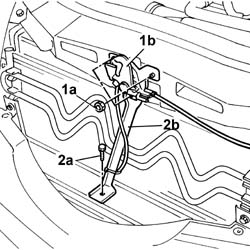
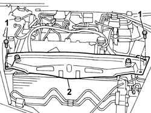
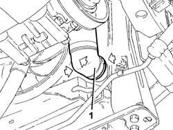
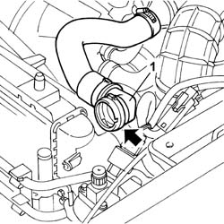
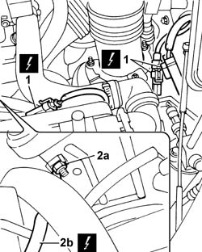
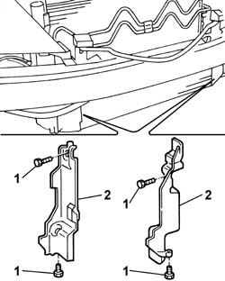
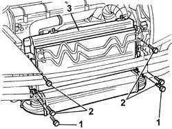

1088B20 Engine cooling RADIATOR - R.R.
- Path
- Procedures > 10 ENGINE > 1088 ENGINE COOLING > 1088B ENGINE COOLANT RADIATOR AND RESERVOIR > 1088B20 Engine cooling RADIATOR - R.R.
- Kind
- repair procedure (removal / refitting; the operation number is the code)
- Applies to
- engines: 2.4 JTD 20V; all production periods
- Interactive page
- https://sloeber94.github.io/elrnDB-lThss/en/#/850951
Applies to: engines: 2.4 JTD 20V; all production periods
 Removing
Removing
 Refitting
RefittingSee in Op. 7055B54 PROTECTION/GUARD under engine - R.R.
See in Op. 4450B12 Front WHEELS (two) - R.R.
See in Op. 7055B42 FRONT WHEEL ARCH LINER (one), left or right - R.R.
- (right side)
See in Op. 7055B64 Engine compartment DUST SEAL in front wheel arch (one), left or right - R.R.
- (right side)
See in Op. 7210E10 FRONT BUMPER
1. Undo the fixing nuts (1a) and remove the bonnet lock (1b) from the housing in the crossmember.
2. Undo the lower nut (2a) and remove the lock reinforcement bracket (2b).

Applies to: engines: 2.4 JTD 20V; all production periods
1. Undo the retaining bolts.
2. Remove the upper front crossmember.

Applies to: engines: 2.4 JTD 20V; all production periods
- Position a suitable container for collecting the engine coolant.
- Raise the lift.
1. Disconnect the lower radiator pipe.

Applies to: engines: 2.4 JTD 20V; all production periods
- Lower the lift.
1. Disconnect the upper radiator pipe.
- Remove the container for collecting the engine coolant.

Applies to: engines: 2.4 JTD 20V; all production periods
1. Disconnect the electrical connections for the engine cables/fan-radiator cables coupling.
 | Description | Connector |
|---|---|---|
1 | Front/radiator coupling | D009A |
| Description | Connector |
|---|---|---|
1 | Front/radiator coupling | D009B |
| Description | Connector |
|---|---|---|
1 | Front/radiator coupling | D009C |
2. Undo the nut (2a) and disconnect the earth lead (2b) from the bodyshell.
| Description | Connector |
|---|---|---|
2b | Right front earth | C011 |

Applies to: engines: 2.4 JTD 20V; all production periods
1. Undo the retaining bolts.
2. Remove both right and left ducts on the radiator.

Applies to: engines: 2.4 JTD 20V; all production periods
1. Undo the bolts fixing the air/air heat exchanger to the radiator.
2. Undo the bolts fixing the condenser to the radiator.
3. Release the radiator-fan assembly from the lower fastenings and remove it through the top of the engine compartment.

Applies to: engines: 2.4 JTD 20V; all production periods
Refitting
Removing- Position the radiator-condenser-fan assembly in the special housing on the lower crossmember, engaging the rubber mountings in the lower part of the radiator in the special housing in the crossmember.
- Tighten the bolts fixing the air/air heat exchanger to the radiator.
- Tighten the bolts fixing the condenser to the radiator.
- Fit both right and left ducts in the seat on the radiator and tighten the bolts.
- Connect the electrical connections for the engine cables/fan-radiator cables coupling.
| Description | Connector |
|---|---|---|
. | Front/radiator coupling | D009A |
| Description | Connector |
|---|---|---|
. | Front/radiator coupling | D009C |
| Description | Connector |
|---|---|---|
. | Front/radiator coupling | D009B |
- Connect the earth lead to the bodyshell and secure it using the fixing nut.
| Description | Connector |
|---|---|---|
. | Right front earth | C011 |
- Connect the upper and lower engine coolant pipes to the radiator.
- Fit the cold air intake on the connector for the air filter.
- Fit the upper front crossmember and tighten the fixing nuts to torque.
 | Value - daNm | Fastening | Component | Ø |
|---|---|---|---|---|
. | 0.6 | Bolts | FRONT WING CROSSMEMBER HEADLAMP HOUSINGS | M6 |
- Fit the bonnet lid lock complete with bracket and tighten the nuts fixing it to the upper crossmember and to the lower crossmember.
See in Op. 7210E10 FRONT BUMPER
See in Op. 7055B42 FRONT WHEEL ARCH LINER (one), left or right - R.R.
- (right side)
See in Op. 7055B64 Engine compartment DUST SEAL in front wheel arch (one), left or right - R.R.
- (right side)